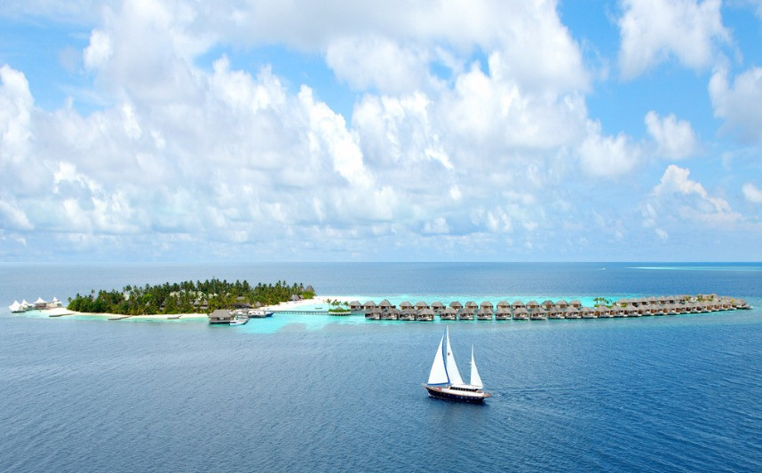

| 马尔代夫 |
|  |
| 马尔代夫共和国（原名马尔代夫群岛，1969年4月改为现名）位于南亚，是印度洋上一个岛国，由1200余个小珊瑚岛屿组成，其中202个岛屿有人居住。东北与斯里兰卡相距675公里，北部与印度的米尼科伊岛相距约113公里，面积300平方公里，是亚洲最小的国家。马尔代夫南部的赤道海峡和一度半海峡为海上交通要道。马尔代夫基于环境因素，境内无法建设铁路，但仍设有易卜拉欣纳西尔国际机场。该国虽然国土偏小，建国也不久，但有很多节日，同时该国也是个伊斯兰教国家。马尔代夫亦被誉为"上帝抛洒人间的项链"，"印度洋上人间最后的乐园"。 |